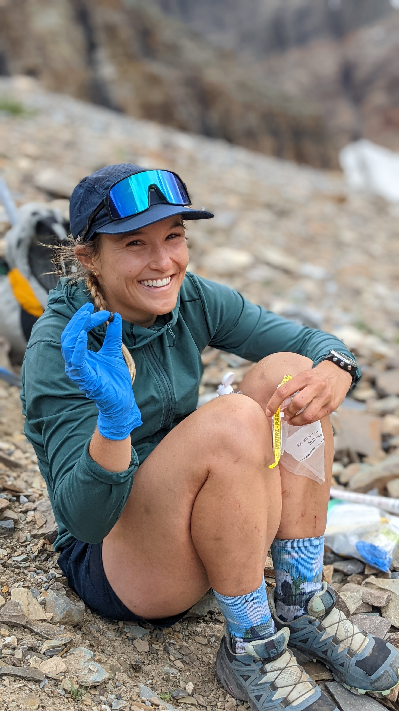
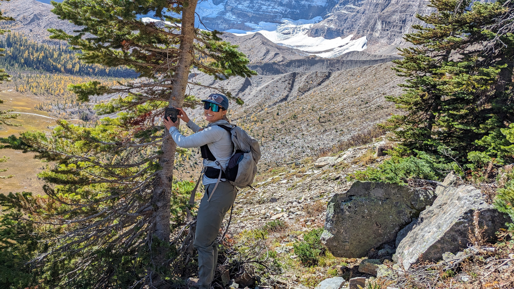
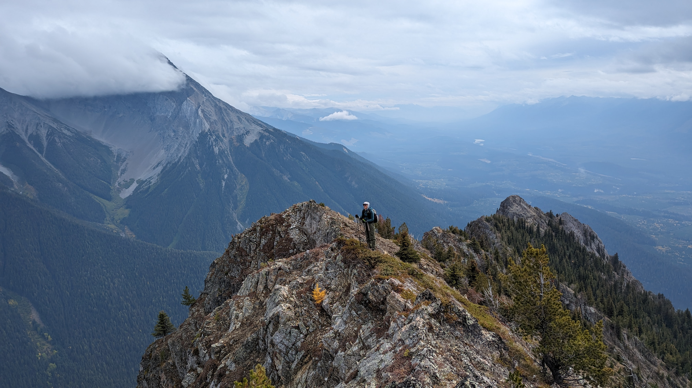
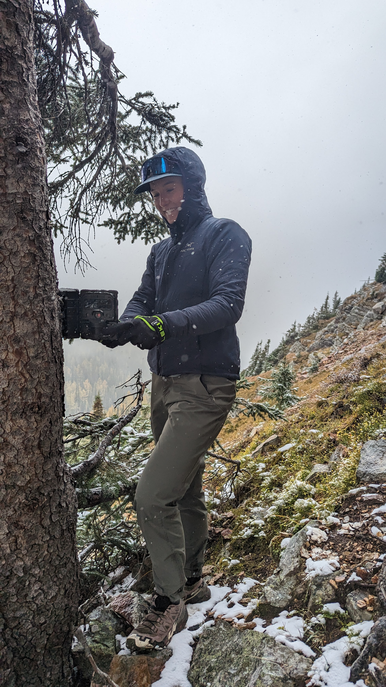
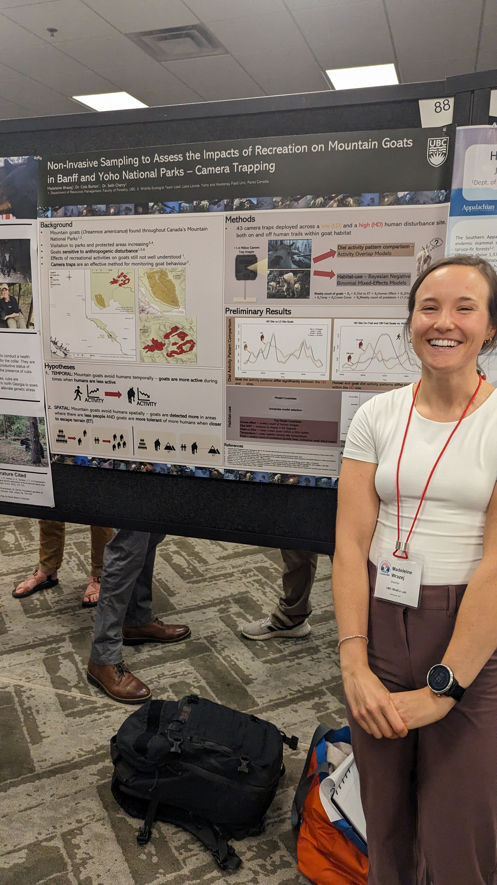
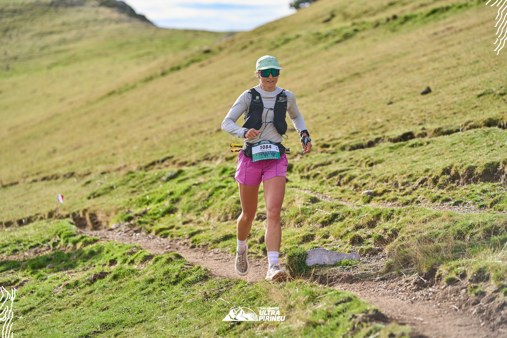
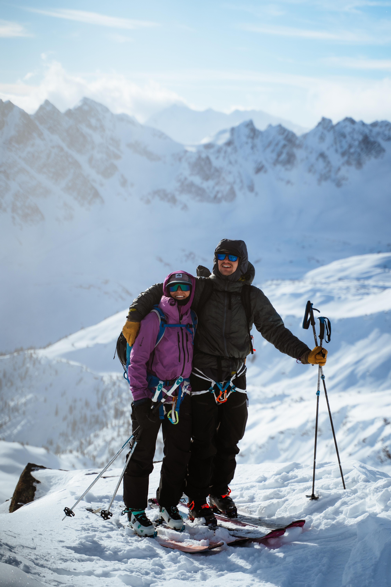
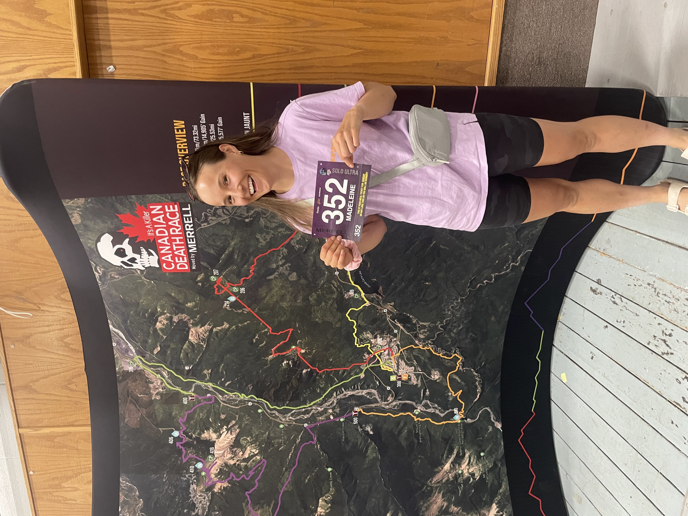

Mountain Parks Phenology Analysis
Analysis of plant phenology data collected across Canada's mountain national parks. Develops reproducible workflows for processing time-series ecological data and extracting meaningful seasonal patterns.

Hello, I'm
Ecological Data Analyst & Workflow Developer
I work in ecological monitoring with Parks Canada, building data management tools and analysis workflows that bridge field science and data-driven insight.
I'm an ecological data analyst working with Parks Canada on ecological monitoring programs in the mountain national parks. My work sits at the intersection of field ecology and data science — collecting environmental data, then building the tools to make sense of it.
I'm particularly passionate about data management workflows and creating user-friendly tools that make complex analyses more accessible. I use AI tools heavily in my development process to build robust data pipelines, Streamlit applications, and machine learning workflows.
Outside of work, I apply the same data-driven approach to ultra marathon training. Recently, I built a web app to track my training since a spreadsheet just wasn't cutting it.
My research investigated the impacts of recreational disturbance on mountain goats in Banff and Yoho national parks. I used camera traps to document behavioural responses and analyzed stress hormones extracted from mountain goat hair to assess physiological impacts.
Read MSc Thesis →Analysis of plant phenology data collected across Canada's mountain national parks. Develops reproducible workflows for processing time-series ecological data and extracting meaningful seasonal patterns.
A personal web app built to log and visualize ultra marathon training data. Proves that my passion for building data management tools applies equally to work and my love for endurance sports.
Data-focused ecologist with an MSc in Forestry (honours) and 9+ years of experience in ecological monitoring and research. Specializing in building reproducible data workflows, QA/QC systems, and analysis pipelines using R and Python. Experienced in statistical modeling, spatial analysis, and image-based phenology workflows.
Resource Management Officer I
Graduate Researcher
Teaching Assistant
Resource Management, Technician & Student Roles
In Progress
MSc Forestry (with honours)
BSc Anthropology







